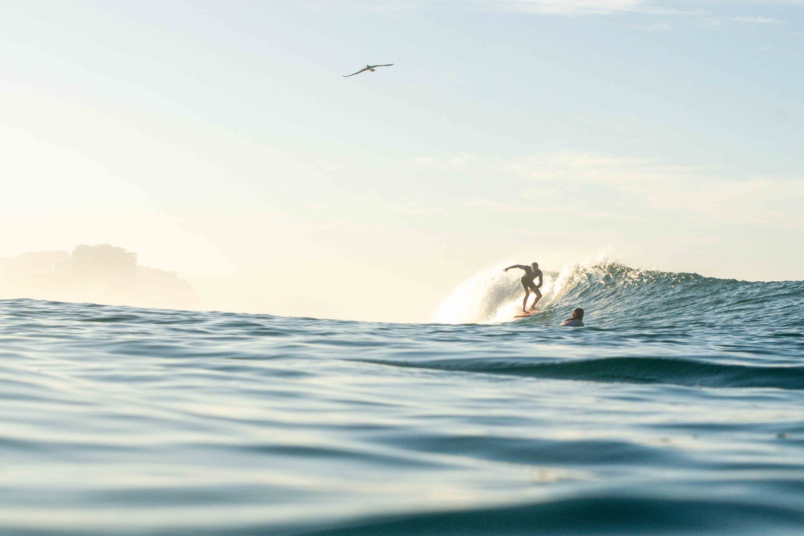
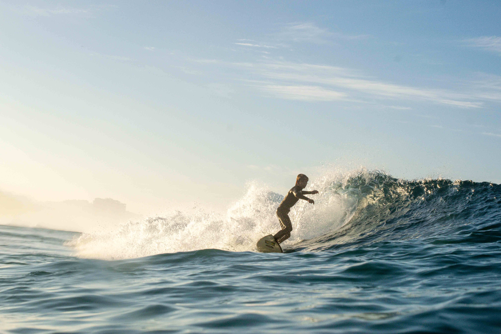
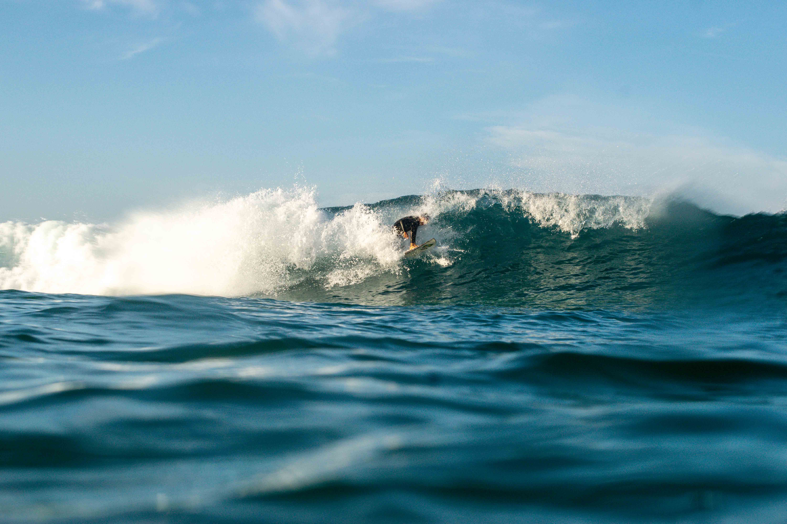

Usa mix-blend-mode para a marca se adaptar à foto: em áreas escuras fica clara,
em áreas claras inverte. Combina uma grade leve (soft-light) com um texto central
(difference), cobrindo bem cenas de praia claras e sombras fortes.
Atual (referência)

Proposta C — blend mode

